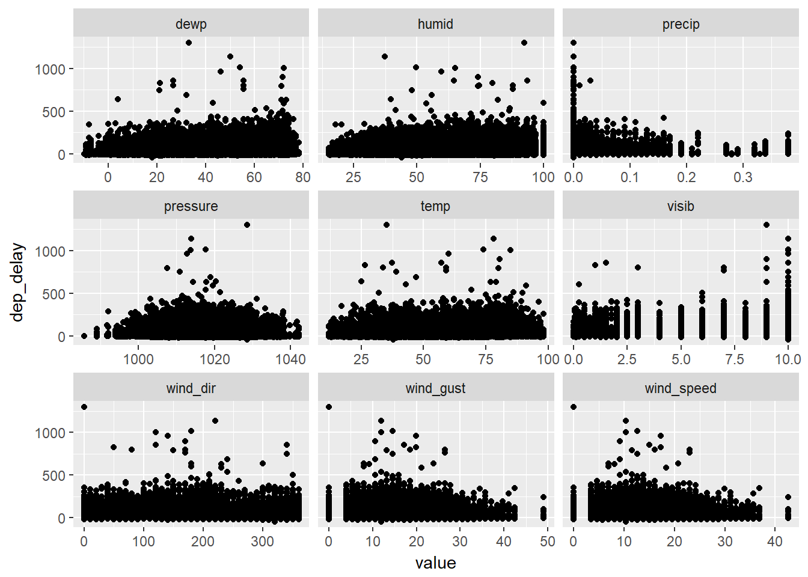

13 Relational data
13.1 Introduction
No exercises.
13.2 nycflights13
13.2.1 Exercises
library(tidyverse)
library(nycflights13)1 - Imagine you wanted to draw (approximately) the route each plane flies from its origin to its destination. What variables would you need? What tables would you need to combine?
Here I printed out the complete list of variable names in airports, planes, and flights.
colnames(airports)## [1] "faa" "name" "lat" "lon" "alt" "tz" "dst" "tzone"colnames(planes)## [1] "tailnum" "year" "type" "manufacturer"
## [5] "model" "engines" "seats" "speed"
## [9] "engine"colnames(flights)## [1] "year" "month" "day"
## [4] "dep_time" "sched_dep_time" "dep_delay"
## [7] "arr_time" "sched_arr_time" "arr_delay"
## [10] "carrier" "flight" "tailnum"
## [13] "origin" "dest" "air_time"
## [16] "distance" "hour" "minute"
## [19] "time_hour" "dep_time_mins" "sched_dep_time_mins"
## [22] "arr_time_mins" "flight_time" "pre_dep_delay"The main two tables we need to combine are airports and flights. We need to match bth origin and dest in flights with faa in airports. If we want additional information about each plane, then we will need to match tailnum in planes with tailnum in flights as well.
2 - I forgot to draw the relationship between weather and airports. What is the relationship and how should it appear in the diagram?
Referring to the variable names of the two tables:
colnames(weather)## [1] "origin" "year" "month" "day" "hour"
## [6] "temp" "dewp" "humid" "wind_dir" "wind_speed"
## [11] "wind_gust" "precip" "pressure" "visib" "time_hour"colnames(airports)## [1] "faa" "name" "lat" "lon" "alt" "tz" "dst" "tzone"The two tables can be matched via the variable origin in weather and faa in airports.
3 - weather only contains information for the origin (NYC) airports. If it contained weather records for all airports in the USA, what additional relation would it define with flights?
It would allow us to match the weather at the destinations as well.
4 - We know that some days of the year are special, and fewer people than usual fly on them. How might you represent that data as a data frame? What would be the primary keys of that table? How would it connect to the existing tables?
We can create a new table special containing the pertaining information of the special dates. To match special with the exisiting tables, the keys would be year, month, and day.
13.3 Keys
13.3.1 Exercises
1 - Add a surrogate key to flights.
flights %>%
mutate(index = row_number()) %>%
select(index, everything())## # A tibble: 109,416 x 25
## index year month day dep_time sched_dep_time dep_delay arr_time
## <int> <int> <int> <int> <int> <int> <dbl> <int>
## 1 1 2013 1 1 542 540 2.00 923
## 2 2 2013 1 1 544 545 - 1.00 1004
## 3 3 2013 1 1 557 600 - 3.00 838
## 4 4 2013 1 1 558 600 - 2.00 849
## 5 5 2013 1 1 558 600 - 2.00 853
## 6 6 2013 1 1 558 600 - 2.00 924
## 7 7 2013 1 1 559 559 0 702
## 8 8 2013 1 1 606 610 - 4.00 837
## 9 9 2013 1 1 611 600 11.0 945
## 10 10 2013 1 1 613 610 3.00 925
## # ... with 109,406 more rows, and 17 more variables: sched_arr_time <int>,
## # arr_delay <dbl>, carrier <chr>, flight <int>, tailnum <chr>,
## # origin <chr>, dest <chr>, air_time <dbl>, distance <dbl>, hour <dbl>,
## # minute <dbl>, time_hour <dttm>, dep_time_mins <dbl>,
## # sched_dep_time_mins <dbl>, arr_time_mins <dbl>, flight_time <dbl>,
## # pre_dep_delay <dbl>2 - Identify the keys in the following datasets
The primary keys for Lahman::Batting are playerID, yearID, stint, teamID, and lgID.
Lahman::Batting %>%
group_by(playerID, yearID, stint, teamID, lgID) %>%
mutate(n = n()) %>%
filter(n > 1) %>%
nrow()## [1] 0The primary keys for babynames::babynames are year, sex, and name.
babynames::babynames %>%
group_by(year, sex, name) %>%
mutate(n = n()) %>%
filter(n > 1) %>%
nrow()## [1] 0The primary keys for nasaweather::atoms are lat, long, year, and month
nasaweather::atmos %>%
group_by(lat, long, year, month) %>%
mutate(n = n()) %>%
filter(n > 1) %>%
nrow()## [1] 0The primary key for fueleconomy::vehicles is simply id.
fueleconomy::vehicles %>%
group_by(id) %>%
mutate(n = n()) %>%
filter(n > 1) %>%
nrow()## [1] 0It’s a bit tricky for ggplot2::diamdons. My intuition is that each diamond is unique, so it would be most appropriate to add a surrogate key.
3 - Draw a diagram illustrating the connections between the Batting, Master, and Salaries tables in the Lahman package. Draw another diagram that shows the relationship between Master, Managers, AwardsManagers.
How would you characterise the relationship between the Batting, Pitching, and Fielding tables?
The variables names are printed below:
colnames(Lahman::Batting)## [1] "playerID" "yearID" "stint" "teamID" "lgID" "G"
## [7] "AB" "R" "H" "X2B" "X3B" "HR"
## [13] "RBI" "SB" "CS" "BB" "SO" "IBB"
## [19] "HBP" "SH" "SF" "GIDP"colnames(Lahman::Master)## [1] "playerID" "birthYear" "birthMonth" "birthDay"
## [5] "birthCountry" "birthState" "birthCity" "deathYear"
## [9] "deathMonth" "deathDay" "deathCountry" "deathState"
## [13] "deathCity" "nameFirst" "nameLast" "nameGiven"
## [17] "weight" "height" "bats" "throws"
## [21] "debut" "finalGame" "retroID" "bbrefID"
## [25] "deathDate" "birthDate"colnames(Lahman::Salaries)## [1] "yearID" "teamID" "lgID" "playerID" "salary"colnames(Lahman::Managers)## [1] "playerID" "yearID" "teamID" "lgID" "inseason" "G"
## [7] "W" "L" "rank" "plyrMgr"colnames(Lahman::AwardsManagers)## [1] "playerID" "awardID" "yearID" "lgID" "tie" "notes"Batting contains batting statistics for players. The primary keys are playerID, yearID, stint, teamID, and lgID. The players’ biographical information are stored in Master and can be matched with playerID. The salary information for each player in each year can be matched with playerID, yearID, teamID, and lgID.
Batting and Managers can be matched with playerID, yearID, teamID, and lgID. Mangers and AwardManagers are matched with playerID, yearID, teamID, and lgID.
Batting, Pitching, and Fielding can be matched with playerID, yearID, stint, teamID, and lgID.
13.4 Mutating joins
13.4.1 Exercises
1 - Compute the average delay by destination, then join on the airports data frame so you can show the spatial distribution of delays. Here’s an easy way to draw a map of the United States:
airports %>%
semi_join(flights, c("faa" = "dest")) %>%
ggplot(aes(lon, lat)) +
borders("state") +
geom_point() +
coord_quickmap()Calculate the average arrival delay at each destination airport. Then join with airports to get the log and lat data. (Note: some dest can’t find a match in faa in airports)
flights %>% group_by(dest) %>%
summarize(avg_arr_delay = mean(arr_delay, na.rm = TRUE)) %>%
left_join(airports, by = c('dest' = 'faa')) %>%
ggplot(aes(x = lon, y = lat, size = avg_arr_delay, color = avg_arr_delay)) +
borders('state') +
geom_point() +
coord_quickmap()## Warning: Removed 4 rows containing missing values (geom_point).2 - Add the location of the origin and destination (i.e. the lat and lon) to flights.
To better distingush the added location information between origin and destination, we can define suffix to the names of the variables joined to the exisiting table. To illustrate:
flights %>%
left_join(airports, by = c('dest' = 'faa')) %>%
left_join(airports, by = c('origin' = 'faa'), suffix = c('.dest', '.origin')) %>%
select(dest, origin, contains('lat'), contains('lon'))## # A tibble: 109,416 x 6
## dest origin lat.dest lat.origin lon.dest lon.origin
## <chr> <chr> <dbl> <dbl> <dbl> <dbl>
## 1 MIA JFK 25.8 40.6 - 80.3 -73.8
## 2 BQN JFK NA 40.6 NA -73.8
## 3 MCO JFK 28.4 40.6 - 81.3 -73.8
## 4 PBI JFK 26.7 40.6 - 80.1 -73.8
## 5 TPA JFK 28.0 40.6 - 82.5 -73.8
## 6 LAX JFK 33.9 40.6 -118 -73.8
## 7 BOS JFK 42.4 40.6 - 71.0 -73.8
## 8 ATL JFK 33.6 40.6 - 84.4 -73.8
## 9 SFO JFK 37.6 40.6 -122 -73.8
## 10 RSW JFK 26.5 40.6 - 81.8 -73.8
## # ... with 109,406 more rows3 - Is there a relationship between the age of a plane and its delays?
We need information from flights and planes. We first calculate the average departure delay and arrival delay for each tailnum, then join with planes through the variable tailnum to get the age information.
flights %>% group_by(tailnum) %>%
summarise(avg_dep_delay = mean(dep_delay, na.rm = TRUE),
avg_arr_delay = mean(arr_delay, na.rm = TRUE)) %>%
gather(key = 'mode', value = 'delay', 2:3) %>%
left_join(planes, by = 'tailnum') %>%
ggplot(mapping = aes(x = year, y = delay)) +
geom_point() +
geom_smooth(se = FALSE) +
facet_grid(.~mode)## `geom_smooth()` using method = 'gam'## Warning: Removed 1194 rows containing non-finite values (stat_smooth).## Warning: Removed 1194 rows containing missing values (geom_point).Apparently it is hard to say there is some kind of relationship between delays and year of a plane.
4 - What weather conditions make it more likely to see a delay?
Since weather only contains origin airports, we will look at departure delay.
flights %>%
left_join(weather, by = c('year','month','day','hour','origin')) %>%
gather(key = 'condition', value = 'value', temp:visib) %>%
filter(!is.na(dep_delay)) %>%
ggplot(mapping = aes(x = value, y = dep_delay)) +
geom_point() +
facet_wrap(~condition, ncol = 3, scale = 'free_x')## Warning: Removed 14599 rows containing missing values (geom_point).
Can you tell which conditions are correlated with departure delay? Just looking at the individual bivariate relationship between departure delay and each weather condition, there does not seem to be any strong correlation.
5 - What happened on June 13 2013? Display the spatial pattern of delays, and then use Google to cross-reference with the weather.
flights %>% filter(year == 2013, month == 6, day == 13) %>%
group_by(dest) %>%
summarize(avg_arr_delay = mean(arr_delay, na.rm = TRUE)) %>%
left_join(airports, by = c('dest' = 'faa')) %>%
ggplot(aes(x = lon, y = lat, size = avg_arr_delay, color = avg_arr_delay)) +
borders('state') +
geom_point(alpha = .5) +
scale_color_continuous(low = 'yellow', high = 'red') +
coord_quickmap()## Warning: Removed 4 rows containing missing values (geom_point).13.5 Filtering joins
13.5.1 Exercises
1 - What does it mean for a flight to have a missing tailnum? What do the tail numbers that don’t have a matching record in planes have in common? (Hint: one variable explains ~90% of the problems.)
Flights have a missing tailnum are those that were cancellled, or without missing dep_time, etc.
flights %>%
filter(is.na(tailnum))## # A tibble: 0 x 24
## # ... with 24 variables: year <int>, month <int>, day <int>,
## # dep_time <int>, sched_dep_time <int>, dep_delay <dbl>, arr_time <int>,
## # sched_arr_time <int>, arr_delay <dbl>, carrier <chr>, flight <int>,
## # tailnum <chr>, origin <chr>, dest <chr>, air_time <dbl>,
## # distance <dbl>, hour <dbl>, minute <dbl>, time_hour <dttm>,
## # dep_time_mins <dbl>, sched_dep_time_mins <dbl>, arr_time_mins <dbl>,
## # flight_time <dbl>, pre_dep_delay <dbl>For those tailnum that don’t have a matching record in plane, it seems most of them come from the same two carriers.
flights %>%
anti_join(planes, by = 'tailnum') %>%
group_by(carrier) %>%
summarize(n = n()) %>%
arrange(desc(n))## # A tibble: 5 x 2
## carrier n
## <chr> <int>
## 1 AA 8176
## 2 MQ 6782
## 3 B6 569
## 4 UA 307
## 5 DL 12 - Filter flights to only show flights with planes that have flown at least 100 flights.
Create a new table that contains planes that have flown over 100 times, then just semi_join().
flights_100 <- flights %>%
filter(!is.na(dep_delay)) %>%
group_by(tailnum) %>%
summarize(n = n()) %>%
filter(n > 100)
flights %>%
semi_join(flights_100, by = 'tailnum')## # A tibble: 71,102 x 24
## year month day dep_time sched_dep_time dep_delay arr_time
## <int> <int> <int> <int> <int> <dbl> <int>
## 1 2013 1 1 544 545 -1.00 1004
## 2 2013 1 1 557 600 -3.00 838
## 3 2013 1 1 558 600 -2.00 849
## 4 2013 1 1 558 600 -2.00 853
## 5 2013 1 1 559 559 0 702
## 6 2013 1 1 613 610 3.00 925
## 7 2013 1 1 615 615 0 1039
## 8 2013 1 1 639 640 -1.00 739
## 9 2013 1 1 645 647 -2.00 815
## 10 2013 1 1 651 655 -4.00 936
## # ... with 71,092 more rows, and 17 more variables: sched_arr_time <int>,
## # arr_delay <dbl>, carrier <chr>, flight <int>, tailnum <chr>,
## # origin <chr>, dest <chr>, air_time <dbl>, distance <dbl>, hour <dbl>,
## # minute <dbl>, time_hour <dttm>, dep_time_mins <dbl>,
## # sched_dep_time_mins <dbl>, arr_time_mins <dbl>, flight_time <dbl>,
## # pre_dep_delay <dbl>3 - Combine fueleconomy::vehicles and fueleconomy::common to find only the records for the most common models.
fueleconomy::vehicles %>%
semi_join(fueleconomy::common, by = c('make', 'model'))## # A tibble: 14,531 x 12
## id make model year class trans drive cyl displ fuel hwy cty
## <int> <chr> <chr> <int> <chr> <chr> <chr> <int> <dbl> <chr> <int> <int>
## 1 1833 Acura Inte~ 1986 Subc~ Auto~ Fron~ 4 1.60 Regu~ 28 22
## 2 1834 Acura Inte~ 1986 Subc~ Manu~ Fron~ 4 1.60 Regu~ 28 23
## 3 3037 Acura Inte~ 1987 Subc~ Auto~ Fron~ 4 1.60 Regu~ 28 22
## 4 3038 Acura Inte~ 1987 Subc~ Manu~ Fron~ 4 1.60 Regu~ 28 23
## 5 4183 Acura Inte~ 1988 Subc~ Auto~ Fron~ 4 1.60 Regu~ 27 22
## 6 4184 Acura Inte~ 1988 Subc~ Manu~ Fron~ 4 1.60 Regu~ 28 23
## 7 5303 Acura Inte~ 1989 Subc~ Auto~ Fron~ 4 1.60 Regu~ 27 22
## 8 5304 Acura Inte~ 1989 Subc~ Manu~ Fron~ 4 1.60 Regu~ 28 23
## 9 6442 Acura Inte~ 1990 Subc~ Auto~ Fron~ 4 1.80 Regu~ 24 20
## 10 6443 Acura Inte~ 1990 Subc~ Manu~ Fron~ 4 1.80 Regu~ 26 21
## # ... with 14,521 more rows4 - Find the 48 hours (over the course of the whole year) that have the worst delays. Cross-reference it with the weather data. Can you see any patterns?
Though not technically the same, we’ll calculate the average delay for each day and attempt to identifty the 2-day windows that have the worst delays. We’ll also calculate the average weather coditions.
flights_2day <- flights %>% group_by(year, month, day) %>%
summarize(avg_dep_delay = mean(dep_delay, na.rm = TRUE),
avg_arr_delay = mean(arr_delay, na.rm = TRUE)) %>%
unite(date, year, month, day, sep = '-') %>%
mutate(date = parse_date(date, "%Y-%m-%d")) %>%
gather(key = 'mode', value = 'delay', 2:3) %>%
mutate(mode = factor(mode, labels = c('Average arrival delay',
'Average departure delay')))
weather_2day <- weather %>% group_by(year, month, day) %>%
summarize(avg_wind_speed = mean(wind_speed, na.rm = TRUE),
avg_wind_gust = mean(wind_gust, na.rm = TRUE),
avg_precip = mean(precip, na.rm = TRUE),
avg_visib = mean(visib, na.rm = TRUE)) %>%
unite(date, year, month, day, sep = '-') %>%
mutate(date = parse_date(date, "%Y-%m-%d"))
flights_2day %>% ggplot() +
geom_point(mapping = aes(x = date, y = delay, color = mode)) +
geom_line(mapping = aes(x = date, y = delay, color = mode)) +
geom_line(data = weather_2day,
mapping = aes(x = date, y = (avg_visib-10)*5, color = 'Average visibility')) +
scale_y_continuous(sec.axis = sec_axis(~./5 + 10,
name = "Average visibility (km)")) +
facet_wrap(~mode, ncol = 1) +
labs(x = "Date",
y = "Average delay (minutes)",
color = 'Legend',
title = "Average delay and average visibility")We have only plotted average delays with average visability. There seems to be (maybe only due to confirmation bias?) that high delays are related to low visibility. We can do similar plots for average delays with other weather conditions, but we will stop here.
5 - What does anti_join(flights, airports, by = c("dest" = "faa")) tell you? What does anti_join(airports, flights, by = c("faa" = "dest")) tell you?
anti_join(flights, airports, by = c("dest" = "faa")) shows flight whose destinations are not included in the airports database.
anti_join(airports, flights, by = c("faa" = "dest")) shows airport names and locations that flights from flights are not flying to.
6 - You might expect that there’s an implicit relationship between plane and airline, because each plane is flown by a single airline. Confirm or reject this hypothesis using the tools you’ve learned above.
Applying a few functions with flights data:
flights %>%
select(carrier, tailnum) %>%
group_by(tailnum) %>%
summarize(n = length(unique(carrier))) %>%
filter(n > 1)## # A tibble: 0 x 2
## # ... with 2 variables: tailnum <chr>, n <int>There were planes that were flown by over 1 carrier.
13.6 Join problems
No exercises.
13.7 Set operations
No exercises.